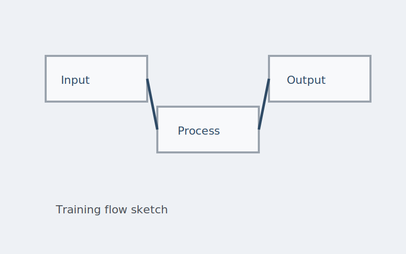

Overview
Workflow Studio maps the moments where work changes hands. It offers a shared timeline and vocabulary that keeps product, design, and engineering aligned.
Problem
Teams were losing track of ownership during long projects. Hand-offs were implicit and progress updates required multiple tools.
Approach
- Interviewed team leads to identify common points of friction.
- Drafted a visual language for stages, owners, and dependencies.
- Prototyped a timeline that collapses into a clear weekly view.
- Tested with real projects and refined the update workflow.
Outcome
The tool reduced status-meeting time and clarified role ownership. Teams adopted it as a lightweight alternative to heavyweight project management suites.
Tools
Sketch, HTML/CSS prototype, stakeholder interviews.
Related
Included in the resume under selected projects.